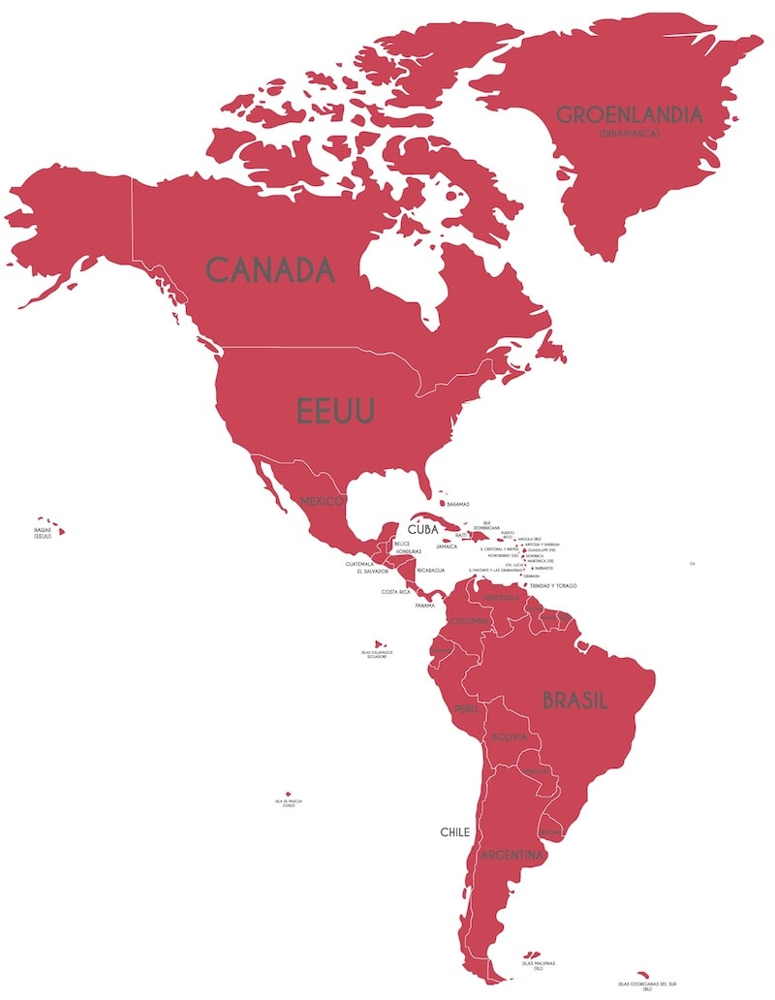
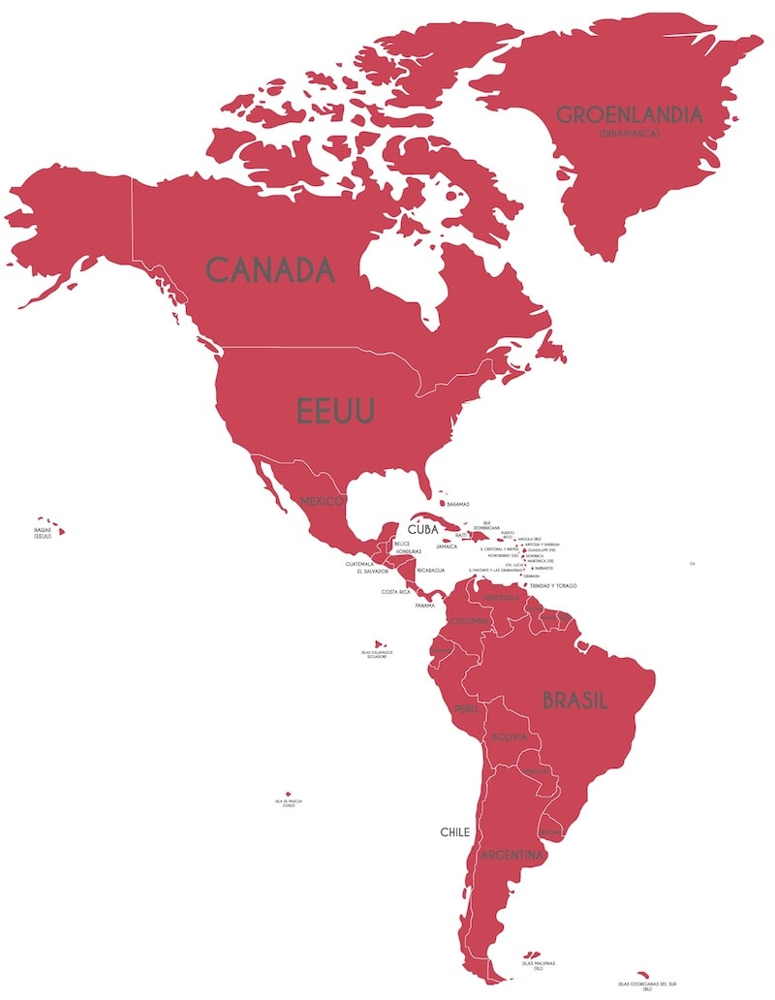

Antártida
Te explicamos todo sobre la Antártida, su clima, relieve, fauna y otras características. Además, países con base
en la Antártida.
¿Qué es la Antártida?
La Antártida (o Antártica en algunos países) es el cuarto continente más grande del
mundo y el más austral (al sur) de todos. De hecho, hacia el centro de su territorio
se encuentra ubicado el polo sur del planeta Tierra. Su territorio está en su casi
totalidad (98%) cubierto de hielos que alcanzan los 1,9 km de espesor.
Características de la Antártida
La superficie del continente es mayor a la de Oceanía o Europa, siendo el cuarto
continente más grande del mundo, con una superficie total de 14.000.000
kilómetros cuadrados, de los cuales apenas 280.000 están libres de hielo durante el verano y 17.968 son de
costas.


Pagina Principal:

Paginas secundarias:
 
